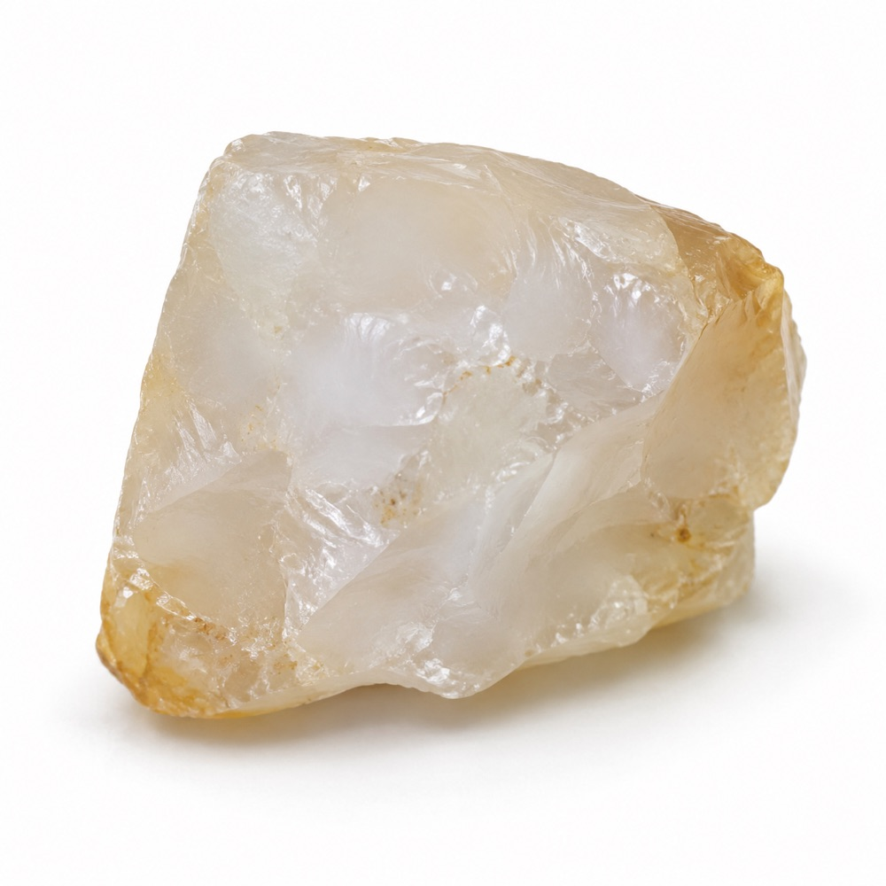
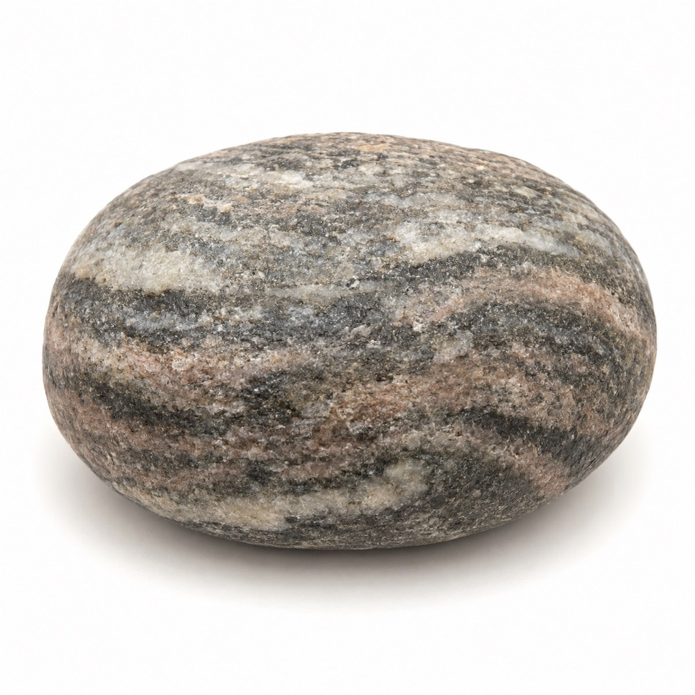
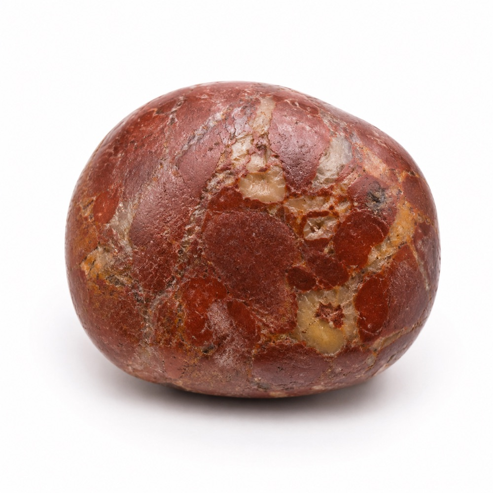
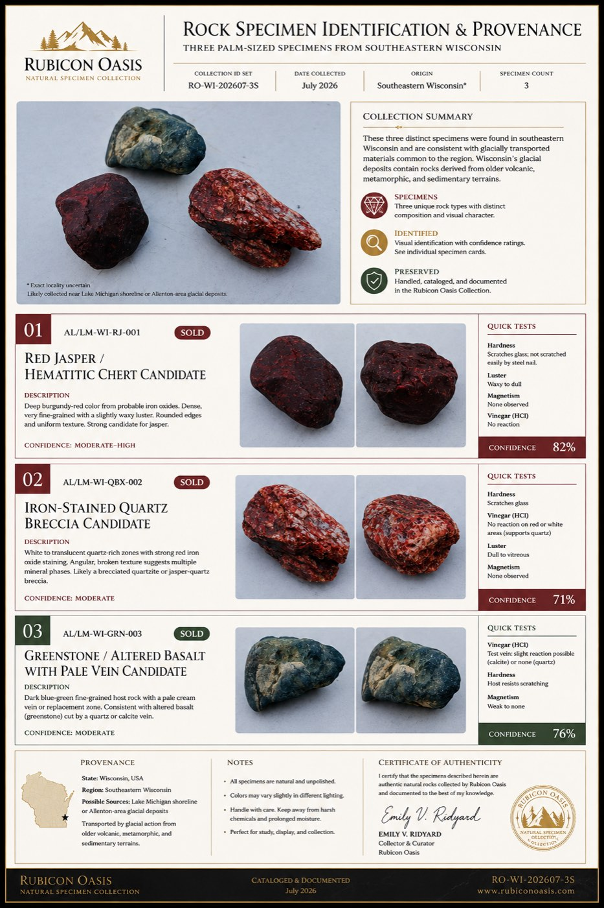

Jewelry review
Milky Quartz
Translucent white mass with a glassy luster and irregular fracture.
The Rubicon Oasis turns rock photography, regional geology research, physical test plans, and human review into a privacy-safe catalog that people can explore—not just a gallery they can scroll past.

I used AI to accelerate visual comparison, organize geological context, propose safe next tests, and translate research into consistent fields. Human judgment remained explicit through confidence ratings, uncertainty notes, and physical-test checkpoints.
Each specimen begins with shape, color, luster, grain, visible layers, fractures, and scale—recorded from original photography before any identification claim is made.
The same research record can support different next actions. Filter representative specimens to see how evidence becomes routing: jewelry review, lapidary testing, or educational display.
3 representative records

Translucent white mass with a glassy luster and irregular fracture.
High-contrast banding makes geological structure legible at a glance.

A distinct iron-rich window invites a careful polish test before valuation.
This is product work, not a one-off identification exercise. The schema connects evidence, uncertainty, commercial usefulness, and responsible presentation.
Photography, observed features, research notes, and recommended tests remain separate so assumptions never masquerade as facts.
Every working ID carries a confidence state and a clear next step for validation.
The same structured data can power inventory, education, jewelry review, marketplace copy, and printable cards.
Each finished sheet combines specimen profiles, quick tests, confidence, provenance, and collection-level context. It gives a reviewer the useful conclusion without hiding the reasoning that produced it.
Open full catalog sheet ↗
Collection data can be useful without publishing sensitive coordinates or personal movement patterns. The public layer intentionally reveals only the regional context needed to support research.